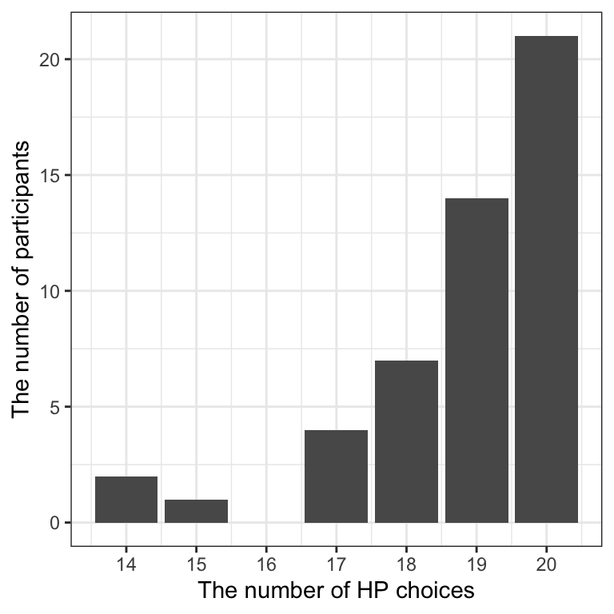
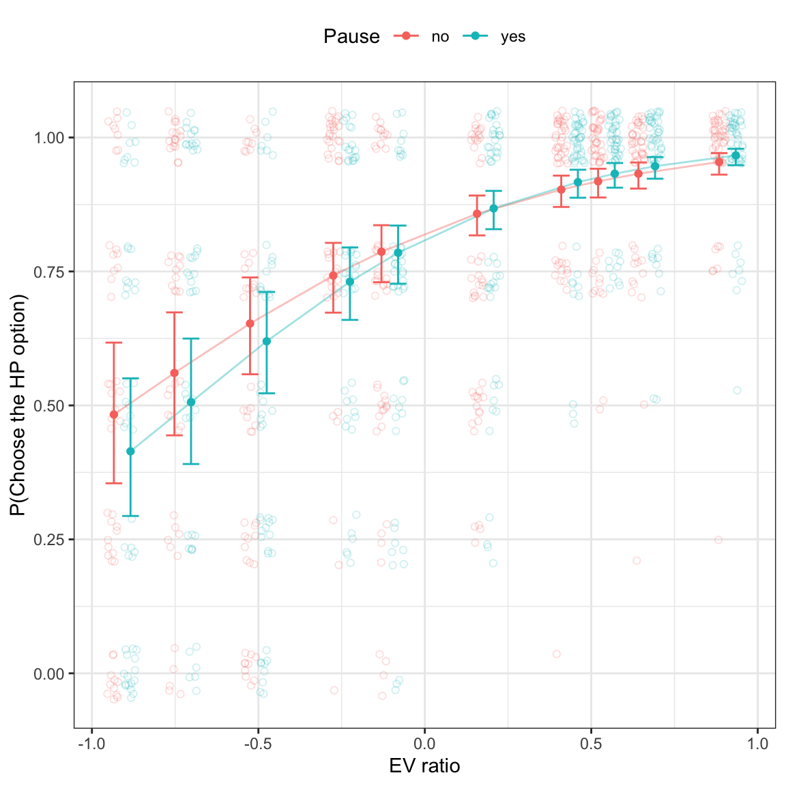
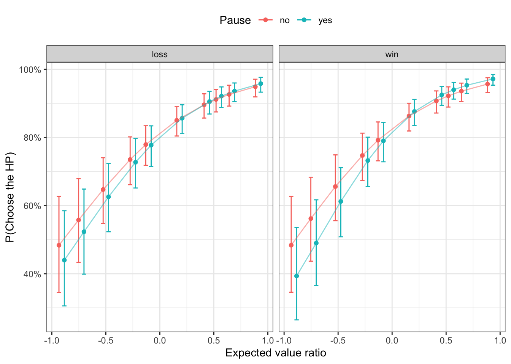
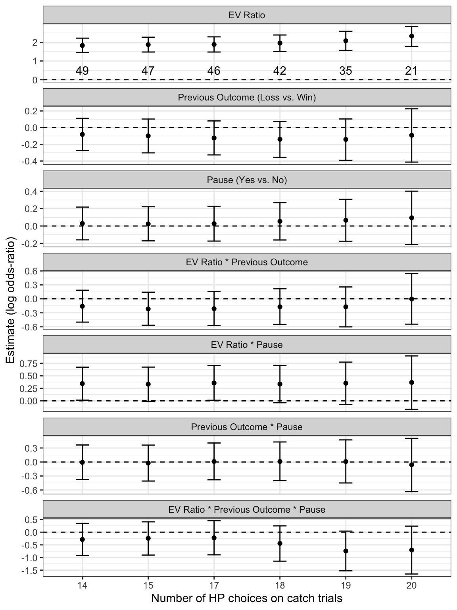

In this set of analyses, I focus on the choices participants made in the Vancouver Gambling task.
Load libraries and data
Code
# load librarieslibrary(MASS)library(Rmisc)library(tidyverse)library(patchwork)library(extraDistr)library(loo)library(bridgesampling)library(brms)library(cmdstanr)library(bayesplot)library(bayestestR)library(tidybayes)library(sjPlot)# parallelize the chains using all the coresoptions(mc.cores = parallel::detectCores())# set the theme for all ggplot2 figurestheme_set(theme_bw() +theme(legend.position ="top",legend.direction ="horizontal"))# create a folder for saving brms fitsif(!dir.exists("brms-fits")){dir.create("brms-fits")}# load the cleaned datadf_main <-read_csv("../../../data/processed/df_main_exp1.csv")
Choices
Catch trials
First, I examine the choices on the catch trials, where participants chose between a high-probability and high-amount option, and a low-probability and low-amount option. Here, the correct choice is always to choose the high-probability (hereafter HP) option.
Code
# select the catch trialsdf_catch <- df_main %>%filter(trial_type =="catch")# for each participant, count how often they picked the HP optioncatch_HP_count <- df_catch %>%group_by(subject_ID) %>%summarize(HP_count =sum(game2_choose_HP))# compute some descriptive informationcatch_min <-min(catch_HP_count$HP_count)catch_max <-max(catch_HP_count$HP_count)catch_mean <-round(mean(catch_HP_count$HP_count), 1)catch_sd <-round(sd(catch_HP_count$HP_count), 1)# plot the resultscatch_HP_count %>%ggplot(aes(HP_count)) +geom_bar() +scale_x_continuous(breaks =14:20, labels =14:20) +labs(x ="The number of HP choices",y ="The number of participants")

Figure 1: The number of participants who chose the HP option N times on the catch trials.
For each participant, I count how often they picked the HP option on the 20 catch trials. Figure 1 shows the results. As can be seen, participants overall performed quite well. On average, they chose the HP option on 18.8 catch trials (SD = 1.5, range = [14, 20]). Even though all participants arguably performed well according to these catch trials, I nevertheless adopt the criterion that participants needed to choose the HP option on >= 15 catch trials (i.e., 75% of all catch trials) in order to be included in the analysis. I later on assess whether this cutoff value influence the result or not.
Experimental trials
EV ratios
In this analysis, I use the EV ratio between two options, the outcome of game 1 (loss = 0.5, win = -0.5) and whether there was a pause or not (yes = 0.5, no = -0.5) and their interactions as predictors to predict whether participants chose the HP option or not on each trial. I use the maximum random structure by including both random intercept and all random slopes per participant.
Code
# select the experimental trialsdf_exp <- df_main %>%filter(trial_type =="exp")# for now, I adopt the criterion that participants needed to # choose the HP option on >= 15 catch trialscatch_criterion <-15subj_include <- catch_HP_count %>%filter(HP_count >= catch_criterion) %>% .$subject_IDdf_exp_selected <- df_exp %>%filter(subject_ID %in% subj_include)# save the data for later analysiswrite_csv(df_exp_selected, "../../../data/processed/df_exp_exp1.csv")# create brms model name accordinglybrms_file_name <-paste("brms-fits/fit_exp_HP", catch_criterion, sep ="_")# fit a brms model - go for the maximum random structurefit_exp <-brm( game2_choose_HP ~ EV_ratio * game1_outcome_num * delay_num + (EV_ratio * game1_outcome_num * delay_num|subject_ID),family =bernoulli(link ="logit"),prior =c(prior(normal(0, 2), class = Intercept),prior(normal(0, 1), class = b),prior(normal(0, 1), class = sd),prior(lkj(2), class = cor) ),data = df_exp_selected,cores =4,iter =15000,warmup =5000,seed =1234,file = brms_file_name,backend ="cmdstanr")
Some general posterior predictive checks (Figure 2).
Make a plot to show the effects of EV ratio and delay.
Code
# Here I will plot the probability of choosing the HP option# as a function of the EV ratio and whether there was a delay or not# EV ratio will be the x axis, and delay (yes vs. no) as two colors# here I define a small adjustment value to the x axis (i.e. EV ratio),# that moves all no delay condition data points a bit to the left,# and the delay condition data points to the right, to reduce overlapping.x_adj_amount <-0.025# compute the probability of choosing HP for each participant# in each condition.plot_raw_data <- df_exp_selected %>%group_by(subject_ID, EV_ratio, delay) %>%summarize(p_HP =mean(game2_choose_HP)) %>%mutate(# add a bit adjustment as mentioned aboveEV_ratio_adj =ifelse(delay =="yes", x_adj_amount, -x_adj_amount),EV_ratio_plot = EV_ratio + EV_ratio_adj )# get the predicted prob of choosing HP from brmsint_conds <-list(EV_ratio =unique(df_exp_selected$EV_ratio),delay_num =c(-0.5, 0.5))plot_prediction <-conditional_effects( fit_exp, "EV_ratio:delay_num",int_conditions = int_conds)# turn the predictions into a tibbleplot_pred <-as_tibble( plot_prediction$`EV_ratio:delay_num` ) %>%mutate(# similarly, add a little adjustment to the EV ratiodelay =ifelse(delay_num ==0.5, "yes", "no"),EV_ratio_adj =ifelse(delay =="yes", x_adj_amount, -x_adj_amount),EV_ratio_plot = EV_ratio + EV_ratio_adj )# plot the resultsEV_delay_plot <- plot_raw_data %>%ggplot(aes(EV_ratio_plot, p_HP, color = delay)) +# plot raw data per participant as transparent open circles# jitter the dots vertically a bit to reduce overlappinggeom_jitter(alpha =0.2, height =0.05, shape =1) +# connect the predicted prob of choosing HP with linesgeom_line(data = plot_pred, aes(x = EV_ratio_plot,y = estimate__,group = delay),alpha =0.4) +# estimates as solid pointsgeom_point(data = plot_pred, aes(EV_ratio_plot, estimate__)) +# add 95% CI as error barsgeom_errorbar(data = plot_pred,aes(x = EV_ratio_plot, y = estimate__,ymin = lower__, ymax = upper__),width =0.05) +labs(x ="EV ratio", y ="P(Choose the HP option)",color ="Pause")EV_delay_plot# save as a png fileggsave(filename ="../plots/EV_delay_Exp1.png", EV_delay_plot,width =4, height =4)

Figure 3: Probability of choosing the HP option as a function of EV ratio and pause.
Make a similar plot, but this time also take the previous outcome into account.
Code
# some functions to make choice plots based on posterior draws from a brms model# plot the posterior distributions of the parameters in the choice modelplot_choice_params <-function(draws){# select variables of interest and do some formatting choice_plot_data <- draws %>%select(b_EV_ratio:`b_EV_ratio:game1_outcome_num:delay_num`) %>%pivot_longer(cols = b_EV_ratio:`b_EV_ratio:game1_outcome_num:delay_num`,names_to ="parameter",values_to ="estimate" ) %>%mutate(parameter =factor( parameter,levels =c("b_EV_ratio","b_game1_outcome_num","b_delay_num","b_EV_ratio:game1_outcome_num","b_EV_ratio:delay_num","b_game1_outcome_num:delay_num","b_EV_ratio:game1_outcome_num:delay_num"),labels =c("EV ratio","Prev outcome (loss vs. win)","Pause (yes vs. no)","EV ratio * Prev outcome","EV ratio * Pause","Prev outcome * Pause","EV ratio * Prev outcome * Pause")) )# compute the mean and 95% credible interval for each parameter# these will be added to the plot as texts choice_summary <- choice_plot_data %>%group_by(parameter) %>%summarize(mean =round(mean(estimate), 2),lowerCI =round(quantile(estimate, probs =0.025), 2),upperCI =round(quantile(estimate, probs =1-0.025), 2) ) %>%# create a text summary, to be added to the plotmutate(# keep trailing zeros for a bit nicer formatting,# see https://stackoverflow.com/questions/5458729/keeping-trailing-zerosmean_txt =sprintf("%.2f", mean),lowerCI_txt =sprintf("%.2f", lowerCI),upperCI_txt =sprintf("%.2f", upperCI),summary =paste0(mean_txt, " [", lowerCI_txt, ", ", upperCI_txt, "]") )# plot all the parameters choice_param_plot <- choice_plot_data %>%ggplot(aes(x = estimate, y = parameter)) +# add a vertical line at 0geom_vline(xintercept =0, linetype ="dashed", color ="darkgray") +# plot the posterior distributionsstat_halfeye(point_interval ="mean_qi") +# add the text summary to the plotgeom_text(data = choice_summary,aes(x = mean, y = parameter, label = summary),nudge_y =-0.25) +labs(x ="Posterior estimate (log odds-ratio)", y ="") +scale_y_discrete(limits=rev) +theme(axis.text =element_text(size =9, color ="black"),axis.title =element_text(size =11))}# plot the predicted probabilities of choosing the HP option,# as a function of all design factors (previous outcome, pause and EV ratio)plot_choice <-function(draws){# a data frame that contains all possible levels in the factors df_design <-list(EV_ratio =c(-0.9090909, -0.7272727, -0.5000000, -0.2500000, -0.1052632,0.1818182, 0.4347826, 0.5454545, 0.6666667, 0.9090909),# include 0 as that allows us to see the main effect of the other variablegame1_outcome_num =c(-0.5, 0, 0.5),delay_num =c(-0.5, 0, 0.5) ) %>%cross_df()# compute the predicted probability of choosing the HP option,# given each level of previous outcome, pause and EV ratio draws_overall <-tibble() # an empty data frame to save the results# iterate through the rows of the design data frame# and compute the predicted probability for each posterior drawfor (row in1:nrow(df_design)){# get the factor level for the current row EV_ratio_tmp <- df_design[row, ]$EV_ratio outcome_tmp <- df_design[row, ]$game1_outcome_num delay_tmp <- df_design[row, ]$delay_num# compute the predicted probability of choosing HP for each draw draws_tmp <- draws %>%mutate(# compute the log odds-ratiolog_OR = b_Intercept + b_EV_ratio * EV_ratio_tmp + b_game1_outcome_num * outcome_tmp + b_delay_num * delay_tmp +`b_EV_ratio:game1_outcome_num`* EV_ratio_tmp * outcome_tmp +`b_EV_ratio:delay_num`* EV_ratio_tmp * delay_tmp +`b_game1_outcome_num:delay_num`* outcome_tmp * delay_tmp +`b_EV_ratio:game1_outcome_num:delay_num`* EV_ratio_tmp * outcome_tmp * delay_tmp,# convert log odds-ratio into probabilityprob =exp(log_OR)/(1+exp(log_OR)),# add the factor levels for the current rowEV_ratio = EV_ratio_tmp,# recode numeric variables into different levelsPause =ifelse(delay_tmp ==0.5, "yes",ifelse(delay_tmp ==-0.5, "no", "combined")),Prev_outcome =ifelse(outcome_tmp ==0.5, "loss",ifelse(outcome_tmp ==-0.5, "win", "combined")) )# add the results of the current row to the overall data frame draws_overall <-bind_rows(draws_overall, draws_tmp) }# compute the mean probability in each cell, plus the 95% CI choice_summary <- draws_overall %>%group_by(Prev_outcome, Pause, EV_ratio) %>%summarize(mean =mean(prob),lowerCI =quantile(prob, probs =0.025),upperCI =quantile(prob, probs =1-0.025) ) %>%# add a little bit jitter to the horizontal location,# depending on the condition of pausemutate(cond =paste(Prev_outcome, Pause, sep ="_"),adj =recode(Pause, "no"=-0.025, "yes"=0.025, "combined"=0),EV_ratio_adj = EV_ratio + adj ) choice_plot <- choice_summary %>%filter(Pause !="combined", Prev_outcome !="combined") %>%ggplot(aes(EV_ratio_adj, mean, color = Pause)) +geom_point() +geom_errorbar(aes(ymin = lowerCI, ymax = upperCI), width =0.04) +geom_line(aes(group = Pause), alpha =0.5) +labs(x ="Expected value ratio", y ="P(Choose the HP)", color ="Pause") +scale_y_continuous(labels = scales::percent) +facet_wrap(~Prev_outcome, ncol =2)# turn the overall draws data frame into a wide format,# for plotting differences between conditions later on draws_overall_wide <- draws_overall %>%pivot_wider(id_cols =c(.chain, .draw, EV_ratio),names_from =c(Prev_outcome, Pause),values_from = prob ) %>%# compute some simple effectsmutate(win_pause_nopause = win_yes - win_no,loss_pause_nopause = loss_yes - loss_no,pause_loss_win = loss_yes - win_yes,nopause_loss_win = loss_no - win_no )# compute summaries of the simple effects effs_summary <- draws_overall_wide %>%select(EV_ratio, win_pause_nopause:nopause_loss_win) %>%pivot_longer(cols = win_pause_nopause:nopause_loss_win,names_to ="effect",values_to ="diff" ) %>%# compute the mean and 95%CI in each cellgroup_by(EV_ratio, effect) %>%summarize(mean =mean(diff),lowerCI =quantile(diff, probs =0.025),upperCI =quantile(diff, probs =1-0.025) )# plot the difference between pause versus no pause,# for after a loss and after a win separately. simple_pause_plot <- effs_summary %>%filter(effect %in%c("win_pause_nopause", "loss_pause_nopause")) %>%mutate(Prev_outcome =factor(effect, levels =c("loss_pause_nopause", "win_pause_nopause"),labels =c("Loss", "Win")),# add a little bit horizontal jitter, for the plottingadj =ifelse(Prev_outcome =="Loss", -0.018, 0.018),EV_ratio_adj = EV_ratio + adj ) %>%ggplot(aes(x = EV_ratio_adj, y = mean, color = Prev_outcome)) +geom_hline(yintercept =0, linetype ="dashed", color ="darkgray") +geom_line(aes(group = Prev_outcome), alpha =0.5) +geom_point() +geom_errorbar(aes(y = mean, ymin = lowerCI, ymax = upperCI),width =0) +labs(x ="Expected value ratio", y ="Pause - No Pause", color ="Previous outcome") +scale_y_continuous(labels = scales::percent)# plot the difference between loss versus win,# for after a pause and after no pause separately. simple_outcome_plot <- effs_summary %>%filter(effect %in%c("pause_loss_win", "nopause_loss_win")) %>%mutate(Pause =factor(effect, levels =c("pause_loss_win", "nopause_loss_win"),labels =c("Yes", "No")),# add a little bit horizontal jitter, for the plottingadj =ifelse(Pause =="Yes", -0.018, 0.018),EV_ratio_adj = EV_ratio + adj ) %>%ggplot(aes(x = EV_ratio_adj, y = mean, color = Pause)) +geom_hline(yintercept =0, linetype ="dashed", color ="darkgray") +geom_line(aes(group = Pause), alpha =0.5) +geom_point() +geom_errorbar(aes(y = mean, ymin = lowerCI, ymax = upperCI),width =0) +labs(x ="Expected value ratio", y ="Loss - Win", color ="Pause") +scale_y_continuous(labels = scales::percent)return(list(p1 = choice_plot, p2 = simple_pause_plot,p3 = simple_outcome_plot))}
Code
# select parameters of interestvar_selected <-get_variables(fit_exp)[1:8]# get posterior draws for these parametersdraws <- fit_exp %>%as_draws_df(variable = var_selected) choice_params_plot <-plot_choice_params(draws)# plot the predicted probability of choosing the HPchoice_plots <-plot_choice(draws)choice_pause_outcome_plot <- choice_plots$p1choice_pause_outcome_plot# save the plot as an RDS file, will be combined with plots from other expssaveRDS(choice_pause_outcome_plot, "../plots/choice_plot_exp1.rds")

Figure 4: Probability of choosing the HP option as a function of EV ratio, pause, and previous outcome.
# another version with only a few variables of interestparam_selected <-c("Probability", "Prob * Prev outcome","Prob * Pause", "Amount","Amount * Prev outcome", "Amount * Pause")prob_amount_post_selected_plot <- draws %>%filter(parameter %in% param_selected) %>%mutate(parameter =factor(parameter, levels = param_selected)) %>%ggplot(aes(x = estimate, y = parameter)) +stat_halfeye() +geom_vline(xintercept =0, linetype ="dashed") +labs(x ="Posterior distribution (log odds-ratio)", y ="")+scale_y_discrete(limits=rev) +theme(axis.text =element_text(size =10, color ="black"),axis.title =element_text(size =11))# save as a png fileggsave(filename ="../plots/prob_amount_post.png", prob_amount_post_plot,width =7, height =8)
Compare this model with probability and amount ratios as two separate predictors, with the model from above with only the EV ratio as the key predictor.
Code
# # compute the loo model fit criteria only need to run this once# # the results are saved in the brms fit objects# fit_exp <- add_criterion(fit_exp, "loo")# fit_prob_amount <- add_criterion(fit_prob_amount, "loo")loo_compare(fit_exp, fit_prob_amount, criterion ="loo")
For the choice RT, I analyzed trials with positive and negative EV ratios separately, and found diverging effects of EV ratios. Here I run a similar exploratory analysis on choices, on trials with positive and negative EV ratios separately.
Code
# get all trials with positive EV ratiosdf_EV_pos <- df_exp_selected %>%filter(EV_ratio >0)# get the unique, positive EV ratios EV_ratio_pos <- df_EV_pos %>% .$EV_ratio %>%unique() %>%sort()# compute the mean EV ratioEV_ratio_pos_mean <-mean(EV_ratio_pos)# center the EV ratiodf_EV_pos <- df_EV_pos %>%mutate(EV_ratio_c = EV_ratio - EV_ratio_pos_mean)# fit the modelfit_EV_pos <-brm( game2_choose_HP ~ EV_ratio_c * game1_outcome_num * delay_num + (EV_ratio_c * game1_outcome_num * delay_num|subject_ID),family =bernoulli(link ="logit"),prior =c(prior(normal(0, 2), class = Intercept),prior(normal(0, 1), class = b),prior(normal(0, 1), class = sd),prior(lkj(2), class = cor) ),data = df_EV_pos,cores =4,iter =15000,warmup =5000,seed =1234,file ="brms-fits/fit_EV_pos",backend ="cmdstanr")
# get all trials with negative EV ratiosdf_EV_neg <- df_exp_selected %>%filter(EV_ratio <0)# get the unique, negative EV ratios EV_ratio_neg <- df_EV_neg %>% .$EV_ratio %>%unique() %>%sort()# compute the mean EV ratioEV_ratio_neg_mean <-mean(EV_ratio_neg)# center the EV ratiodf_EV_neg <- df_EV_neg %>%mutate(EV_ratio_c = EV_ratio - EV_ratio_neg_mean)# fit the modelfit_EV_neg <-brm( game2_choose_HP ~ EV_ratio_c * game1_outcome_num * delay_num + (EV_ratio_c * game1_outcome_num * delay_num|subject_ID),family =bernoulli(link ="logit"),prior =c(prior(normal(0, 2), class = Intercept),prior(normal(0, 1), class = b),prior(normal(0, 1), class = sd),prior(lkj(2), class = cor) ),data = df_EV_neg,cores =4,iter =15000,warmup =5000,seed =1234,file ="brms-fits/fit_EV_neg",backend ="cmdstanr")
# turn the EV ratios into three levels, low (3), middle (3) and high (4)df_exp_selected <- df_exp_selected %>%mutate(EV_level =ifelse(EV_ratio <-0.4, "low",ifelse(EV_ratio <0.3, "middle", "high")),EV_level =factor(EV_level, levels =c("low", "middle", "high")) )# use repeated contrasts, which compare low vs. middle, and middle vs. highcontrasts(df_exp_selected$EV_level) <-contr.sdif(3)# fit a model using the new EV level predictor instead of EV ratiofit_EV_level <-brm( game2_choose_HP ~ EV_level * game1_outcome_num * delay_num + (EV_level * game1_outcome_num * delay_num|subject_ID),family =bernoulli(link ="logit"),prior =c(prior(normal(0, 2), class = Intercept),prior(normal(0, 1), class = b),prior(normal(0, 1), class = sd),prior(lkj(2), class = cor) ),data = df_exp_selected,cores =4,iter =15000,warmup =5000,seed =1234,file ="brms-fits/fit_EV_level",backend ="cmdstanr")
df_exp_selected <- df_exp_selected %>%mutate(# decompose the EV ratio into two predictors,# its absolute value and its sign (positive vs. negative)EV_ratio_abs =abs(EV_ratio),EV_ratio_sign =ifelse(EV_ratio >0, 0.5, -0.5),# determine whether the chosen option is the high EV one or notchoose_high_EV_num =ifelse(choose_high_EV =="yes", 1, 0) )# center the absolute EV ratio valueEV_ratio_abs <- df_exp_selected %>% .$EV_ratio_abs %>%unique()EV_ratio_abs_mean <-mean(EV_ratio_abs)df_exp_selected <- df_exp_selected %>%mutate(EV_ratio_abs_c = EV_ratio_abs - EV_ratio_abs_mean)# fit a modelfit_EV_abs <-brm( choose_high_EV ~ EV_ratio_abs_c * EV_ratio_sign * game1_outcome_num * delay_num + (EV_ratio_abs_c * EV_ratio_sign * game1_outcome_num * delay_num|subject_ID),family =bernoulli(link ="logit"),prior =c(prior(normal(0, 2), class = Intercept),prior(normal(0, 1), class = b),prior(normal(0, 1), class = sd),prior(lkj(2), class = cor) ),data = df_exp_selected,cores =4,iter =15000,warmup =5000,seed =1234,file ="brms-fits/fit_EV_abs",backend ="cmdstanr",control =list(adapt_delta =0.9))
Robustness check
In the analysis above, I used the somewhat arbitrary cutoff value that participants needed to choose the HP option on >= 15 catch trials in order to be included in the analysis. Here I repeat the analysis again, each time using a different cutoff value, to check the robustness of the results.
Code
# get all unique numbers of catch trials across participants# on which they picked the high-prob optionhigh_prob_cutoffs <- catch_HP_count %>% .$HP_count %>%unique() %>%sort()# an empty tibble to hold all resultsoverall_summary <-tibble()# go through the six cutoff values one by one# and fit the model with each of the cutoff valuesfor (high_prob_cutoff in high_prob_cutoffs) {# participants to be included subj_include <- catch_HP_count %>%filter(HP_count >= high_prob_cutoff) %>% .$subject_ID df_exp_tmp <- df_exp %>%filter(subject_ID %in% subj_include)# check the number of participants remaining n_subj <-n_distinct(df_exp_tmp$subject_ID)# fit a brms model - go for the maximum random structure brms_file_name <-paste("brms-fits/fit_exp_HP", high_prob_cutoff, sep ="_") fit_exp <-brm( game2_choose_HP ~ EV_ratio * game1_outcome_num * delay_num + (EV_ratio * game1_outcome_num * delay_num | subject_ID),family =bernoulli(link ="logit"),prior =c(prior(normal(0, 2), class = Intercept),prior(normal(0, 1), class = b),prior(normal(0, 1), class = sd),prior(lkj(2), class = cor) ),data = df_exp_tmp,cores =4,iter =15000,warmup =5000,seed =1234,file = brms_file_name,backend ="cmdstanr" )# extract summary of the posterior draws post_summary <-as_tibble(summary(fit_exp)$fixed, rownames =NA) %>%rownames_to_column(var ="parameter") %>%mutate(n_subj = n_subj,HP_cutoff = high_prob_cutoff)# add it to the overall tibble overall_summary <-bind_rows(overall_summary, post_summary)}
Code
# do some cleaning and reformatting of the variablesoverall_summary_selected <- overall_summary %>%# no need to plot the Intercept, not informativefilter(parameter !="Intercept") %>%mutate(# Re-code the labels so that it looks betterparam_label =recode(parameter,"EV_ratio"="EV Ratio","game1_outcome_num"="Previous Outcome (Loss vs. Win)","delay_num"="Pause (Yes vs. No)","EV_ratio:game1_outcome_num"="EV Ratio * Previous Outcome","EV_ratio:delay_num"="EV Ratio * Pause","game1_outcome_num:delay_num"="Previous Outcome * Pause","EV_ratio:game1_outcome_num:delay_num"="EV Ratio * Previous Outcome * Pause"),param_label =factor(param_label,levels =c("EV Ratio","Previous Outcome (Loss vs. Win)","Pause (Yes vs. No)","EV Ratio * Previous Outcome","EV Ratio * Pause","Previous Outcome * Pause","EV Ratio * Previous Outcome * Pause")),# rename variablesCI_upper =`u-95% CI`,CI_lower =`l-95% CI` )# data frame for showing the number of participantsdf_n_subj <- overall_summary_selected %>%filter(parameter =="EV_ratio") %>%mutate(HP_cutoff =as.factor(HP_cutoff))# plot the posterior distributions from all modelsrobustness_plot <- overall_summary_selected %>%mutate(HP_cutoff =as.factor(HP_cutoff)) %>%ggplot(aes(HP_cutoff, Estimate)) +geom_hline(yintercept =0, linetype ="dashed") +geom_point() +geom_errorbar(aes(ymin = CI_lower, ymax = CI_upper),width =0.2,) +# add the number of participants leftgeom_text(data = df_n_subj, aes(HP_cutoff, 0.5, label = n_subj)) +facet_wrap(~param_label, ncol =1, scales ="free_y") +labs(x ="Number of HP choices on catch trials",y ="Estimate (log odds-ratio)") robustness_plotggsave("../plots/robustness_Exp1.png", robustness_plot,width =6, height =8)

Figure 6: Robustness check
Source Code
---title: "Experiment 1 - choice analysis"author: - name: "Zhang Chen" orcid: 0000-0002-3500-9182date: "`r format(Sys.time(), '%d %B, %Y')`"format: html: code-fold: true code-tools: trueeditor: visualexecute: warning: false error: falsetoc: truetoc-depth: 3---In this set of analyses, I focus on the choices participants made in the Vancouver Gambling task.## Load libraries and data```{r}# load librarieslibrary(MASS)library(Rmisc)library(tidyverse)library(patchwork)library(extraDistr)library(loo)library(bridgesampling)library(brms)library(cmdstanr)library(bayesplot)library(bayestestR)library(tidybayes)library(sjPlot)# parallelize the chains using all the coresoptions(mc.cores = parallel::detectCores())# set the theme for all ggplot2 figurestheme_set(theme_bw() +theme(legend.position ="top",legend.direction ="horizontal"))# create a folder for saving brms fitsif(!dir.exists("brms-fits")){dir.create("brms-fits")}# load the cleaned datadf_main <-read_csv("../../../data/processed/df_main_exp1.csv")```## Choices### Catch trialsFirst, I examine the choices on the catch trials, where participants chose between a high-probability and high-amount option, and a low-probability and low-amount option. Here, the correct choice is always to choose the high-probability (hereafter HP) option.```{r}#| label: fig-catch-choice#| fig-cap: The number of participants who chose the HP option N times on the catch trials.#| fig-width: 4#| fig-height: 4# select the catch trialsdf_catch <- df_main %>%filter(trial_type =="catch")# for each participant, count how often they picked the HP optioncatch_HP_count <- df_catch %>%group_by(subject_ID) %>%summarize(HP_count =sum(game2_choose_HP))# compute some descriptive informationcatch_min <-min(catch_HP_count$HP_count)catch_max <-max(catch_HP_count$HP_count)catch_mean <-round(mean(catch_HP_count$HP_count), 1)catch_sd <-round(sd(catch_HP_count$HP_count), 1)# plot the resultscatch_HP_count %>%ggplot(aes(HP_count)) +geom_bar() +scale_x_continuous(breaks =14:20, labels =14:20) +labs(x ="The number of HP choices",y ="The number of participants")```For each participant, I count how often they picked the HP option on the 20 catch trials. @fig-catch-choice shows the results. As can be seen, participants overall performed quite well. On average, they chose the HP option on `r catch_mean` catch trials (SD = `r catch_sd`, range = \[`r catch_min`, `r catch_max`\]). Even though all participants arguably performed well according to these catch trials, I nevertheless adopt the criterion that participants needed to choose the HP option on \>= 15 catch trials (i.e., 75% of all catch trials) in order to be included in the analysis. I later on assess whether this cutoff value influence the result or not.### Experimental trials#### EV ratiosIn this analysis, I use the EV ratio between two options, the outcome of game 1 (loss = 0.5, win = -0.5) and whether there was a pause or not (yes = 0.5, no = -0.5) and their interactions as predictors to predict whether participants chose the HP option or not on each trial. I use the maximum random structure by including both random intercept and all random slopes per participant.```{r}# select the experimental trialsdf_exp <- df_main %>%filter(trial_type =="exp")# for now, I adopt the criterion that participants needed to # choose the HP option on >= 15 catch trialscatch_criterion <-15subj_include <- catch_HP_count %>%filter(HP_count >= catch_criterion) %>% .$subject_IDdf_exp_selected <- df_exp %>%filter(subject_ID %in% subj_include)# save the data for later analysiswrite_csv(df_exp_selected, "../../../data/processed/df_exp_exp1.csv")# create brms model name accordinglybrms_file_name <-paste("brms-fits/fit_exp_HP", catch_criterion, sep ="_")# fit a brms model - go for the maximum random structurefit_exp <-brm( game2_choose_HP ~ EV_ratio * game1_outcome_num * delay_num + (EV_ratio * game1_outcome_num * delay_num|subject_ID),family =bernoulli(link ="logit"),prior =c(prior(normal(0, 2), class = Intercept),prior(normal(0, 1), class = b),prior(normal(0, 1), class = sd),prior(lkj(2), class = cor) ),data = df_exp_selected,cores =4,iter =15000,warmup =5000,seed =1234,file = brms_file_name,backend ="cmdstanr")```Some general posterior predictive checks (@fig-ppc-general).```{r}#| label: fig-ppc-general#| fig-cap: General posterior predictive checks.#| fig-subcap: #| - "As a function of delay"#| - "As a function of game 1 outcome"#| - "As a function of EV ratio"#| layout: [[1, 1], [1]]#| fig-width: 8#| fig-height: 8# model diagnostics# check the trace plot, looks good.# plot(fit_exp)# loo(fit_exp)# posterior predictive checksyrep <-posterior_predict(fit_exp)ppc_bars_grouped(df_exp_selected$game2_choose_HP, yrep, df_exp_selected$delay, prob =0.95, freq =FALSE)ppc_bars_grouped(df_exp_selected$game2_choose_HP, yrep, df_exp_selected$game1_outcome, prob =0.95, freq =FALSE)ppc_bars_grouped(df_exp_selected$game2_choose_HP, yrep, df_exp_selected$EV_ratio, prob =0.95, freq =FALSE)```Make a plot to show the effects of EV ratio and delay.```{r}#| label: fig-EV-ratio-delay#| fig-cap: Probability of choosing the HP option as a function of EV ratio and pause.#| fig-width: 6#| fig-height: 6# Here I will plot the probability of choosing the HP option# as a function of the EV ratio and whether there was a delay or not# EV ratio will be the x axis, and delay (yes vs. no) as two colors# here I define a small adjustment value to the x axis (i.e. EV ratio),# that moves all no delay condition data points a bit to the left,# and the delay condition data points to the right, to reduce overlapping.x_adj_amount <-0.025# compute the probability of choosing HP for each participant# in each condition.plot_raw_data <- df_exp_selected %>%group_by(subject_ID, EV_ratio, delay) %>%summarize(p_HP =mean(game2_choose_HP)) %>%mutate(# add a bit adjustment as mentioned aboveEV_ratio_adj =ifelse(delay =="yes", x_adj_amount, -x_adj_amount),EV_ratio_plot = EV_ratio + EV_ratio_adj )# get the predicted prob of choosing HP from brmsint_conds <-list(EV_ratio =unique(df_exp_selected$EV_ratio),delay_num =c(-0.5, 0.5))plot_prediction <-conditional_effects( fit_exp, "EV_ratio:delay_num",int_conditions = int_conds)# turn the predictions into a tibbleplot_pred <-as_tibble( plot_prediction$`EV_ratio:delay_num` ) %>%mutate(# similarly, add a little adjustment to the EV ratiodelay =ifelse(delay_num ==0.5, "yes", "no"),EV_ratio_adj =ifelse(delay =="yes", x_adj_amount, -x_adj_amount),EV_ratio_plot = EV_ratio + EV_ratio_adj )# plot the resultsEV_delay_plot <- plot_raw_data %>%ggplot(aes(EV_ratio_plot, p_HP, color = delay)) +# plot raw data per participant as transparent open circles# jitter the dots vertically a bit to reduce overlappinggeom_jitter(alpha =0.2, height =0.05, shape =1) +# connect the predicted prob of choosing HP with linesgeom_line(data = plot_pred, aes(x = EV_ratio_plot,y = estimate__,group = delay),alpha =0.4) +# estimates as solid pointsgeom_point(data = plot_pred, aes(EV_ratio_plot, estimate__)) +# add 95% CI as error barsgeom_errorbar(data = plot_pred,aes(x = EV_ratio_plot, y = estimate__,ymin = lower__, ymax = upper__),width =0.05) +labs(x ="EV ratio", y ="P(Choose the HP option)",color ="Pause")EV_delay_plot# save as a png fileggsave(filename ="../plots/EV_delay_Exp1.png", EV_delay_plot,width =4, height =4)```Make a similar plot, but this time also take the previous outcome into account.```{r}# some functions to make choice plots based on posterior draws from a brms model# plot the posterior distributions of the parameters in the choice modelplot_choice_params <-function(draws){# select variables of interest and do some formatting choice_plot_data <- draws %>%select(b_EV_ratio:`b_EV_ratio:game1_outcome_num:delay_num`) %>%pivot_longer(cols = b_EV_ratio:`b_EV_ratio:game1_outcome_num:delay_num`,names_to ="parameter",values_to ="estimate" ) %>%mutate(parameter =factor( parameter,levels =c("b_EV_ratio","b_game1_outcome_num","b_delay_num","b_EV_ratio:game1_outcome_num","b_EV_ratio:delay_num","b_game1_outcome_num:delay_num","b_EV_ratio:game1_outcome_num:delay_num"),labels =c("EV ratio","Prev outcome (loss vs. win)","Pause (yes vs. no)","EV ratio * Prev outcome","EV ratio * Pause","Prev outcome * Pause","EV ratio * Prev outcome * Pause")) )# compute the mean and 95% credible interval for each parameter# these will be added to the plot as texts choice_summary <- choice_plot_data %>%group_by(parameter) %>%summarize(mean =round(mean(estimate), 2),lowerCI =round(quantile(estimate, probs =0.025), 2),upperCI =round(quantile(estimate, probs =1-0.025), 2) ) %>%# create a text summary, to be added to the plotmutate(# keep trailing zeros for a bit nicer formatting,# see https://stackoverflow.com/questions/5458729/keeping-trailing-zerosmean_txt =sprintf("%.2f", mean),lowerCI_txt =sprintf("%.2f", lowerCI),upperCI_txt =sprintf("%.2f", upperCI),summary =paste0(mean_txt, " [", lowerCI_txt, ", ", upperCI_txt, "]") )# plot all the parameters choice_param_plot <- choice_plot_data %>%ggplot(aes(x = estimate, y = parameter)) +# add a vertical line at 0geom_vline(xintercept =0, linetype ="dashed", color ="darkgray") +# plot the posterior distributionsstat_halfeye(point_interval ="mean_qi") +# add the text summary to the plotgeom_text(data = choice_summary,aes(x = mean, y = parameter, label = summary),nudge_y =-0.25) +labs(x ="Posterior estimate (log odds-ratio)", y ="") +scale_y_discrete(limits=rev) +theme(axis.text =element_text(size =9, color ="black"),axis.title =element_text(size =11))}# plot the predicted probabilities of choosing the HP option,# as a function of all design factors (previous outcome, pause and EV ratio)plot_choice <-function(draws){# a data frame that contains all possible levels in the factors df_design <-list(EV_ratio =c(-0.9090909, -0.7272727, -0.5000000, -0.2500000, -0.1052632,0.1818182, 0.4347826, 0.5454545, 0.6666667, 0.9090909),# include 0 as that allows us to see the main effect of the other variablegame1_outcome_num =c(-0.5, 0, 0.5),delay_num =c(-0.5, 0, 0.5) ) %>%cross_df()# compute the predicted probability of choosing the HP option,# given each level of previous outcome, pause and EV ratio draws_overall <-tibble() # an empty data frame to save the results# iterate through the rows of the design data frame# and compute the predicted probability for each posterior drawfor (row in1:nrow(df_design)){# get the factor level for the current row EV_ratio_tmp <- df_design[row, ]$EV_ratio outcome_tmp <- df_design[row, ]$game1_outcome_num delay_tmp <- df_design[row, ]$delay_num# compute the predicted probability of choosing HP for each draw draws_tmp <- draws %>%mutate(# compute the log odds-ratiolog_OR = b_Intercept + b_EV_ratio * EV_ratio_tmp + b_game1_outcome_num * outcome_tmp + b_delay_num * delay_tmp +`b_EV_ratio:game1_outcome_num`* EV_ratio_tmp * outcome_tmp +`b_EV_ratio:delay_num`* EV_ratio_tmp * delay_tmp +`b_game1_outcome_num:delay_num`* outcome_tmp * delay_tmp +`b_EV_ratio:game1_outcome_num:delay_num`* EV_ratio_tmp * outcome_tmp * delay_tmp,# convert log odds-ratio into probabilityprob =exp(log_OR)/(1+exp(log_OR)),# add the factor levels for the current rowEV_ratio = EV_ratio_tmp,# recode numeric variables into different levelsPause =ifelse(delay_tmp ==0.5, "yes",ifelse(delay_tmp ==-0.5, "no", "combined")),Prev_outcome =ifelse(outcome_tmp ==0.5, "loss",ifelse(outcome_tmp ==-0.5, "win", "combined")) )# add the results of the current row to the overall data frame draws_overall <-bind_rows(draws_overall, draws_tmp) }# compute the mean probability in each cell, plus the 95% CI choice_summary <- draws_overall %>%group_by(Prev_outcome, Pause, EV_ratio) %>%summarize(mean =mean(prob),lowerCI =quantile(prob, probs =0.025),upperCI =quantile(prob, probs =1-0.025) ) %>%# add a little bit jitter to the horizontal location,# depending on the condition of pausemutate(cond =paste(Prev_outcome, Pause, sep ="_"),adj =recode(Pause, "no"=-0.025, "yes"=0.025, "combined"=0),EV_ratio_adj = EV_ratio + adj ) choice_plot <- choice_summary %>%filter(Pause !="combined", Prev_outcome !="combined") %>%ggplot(aes(EV_ratio_adj, mean, color = Pause)) +geom_point() +geom_errorbar(aes(ymin = lowerCI, ymax = upperCI), width =0.04) +geom_line(aes(group = Pause), alpha =0.5) +labs(x ="Expected value ratio", y ="P(Choose the HP)", color ="Pause") +scale_y_continuous(labels = scales::percent) +facet_wrap(~Prev_outcome, ncol =2)# turn the overall draws data frame into a wide format,# for plotting differences between conditions later on draws_overall_wide <- draws_overall %>%pivot_wider(id_cols =c(.chain, .draw, EV_ratio),names_from =c(Prev_outcome, Pause),values_from = prob ) %>%# compute some simple effectsmutate(win_pause_nopause = win_yes - win_no,loss_pause_nopause = loss_yes - loss_no,pause_loss_win = loss_yes - win_yes,nopause_loss_win = loss_no - win_no )# compute summaries of the simple effects effs_summary <- draws_overall_wide %>%select(EV_ratio, win_pause_nopause:nopause_loss_win) %>%pivot_longer(cols = win_pause_nopause:nopause_loss_win,names_to ="effect",values_to ="diff" ) %>%# compute the mean and 95%CI in each cellgroup_by(EV_ratio, effect) %>%summarize(mean =mean(diff),lowerCI =quantile(diff, probs =0.025),upperCI =quantile(diff, probs =1-0.025) )# plot the difference between pause versus no pause,# for after a loss and after a win separately. simple_pause_plot <- effs_summary %>%filter(effect %in%c("win_pause_nopause", "loss_pause_nopause")) %>%mutate(Prev_outcome =factor(effect, levels =c("loss_pause_nopause", "win_pause_nopause"),labels =c("Loss", "Win")),# add a little bit horizontal jitter, for the plottingadj =ifelse(Prev_outcome =="Loss", -0.018, 0.018),EV_ratio_adj = EV_ratio + adj ) %>%ggplot(aes(x = EV_ratio_adj, y = mean, color = Prev_outcome)) +geom_hline(yintercept =0, linetype ="dashed", color ="darkgray") +geom_line(aes(group = Prev_outcome), alpha =0.5) +geom_point() +geom_errorbar(aes(y = mean, ymin = lowerCI, ymax = upperCI),width =0) +labs(x ="Expected value ratio", y ="Pause - No Pause", color ="Previous outcome") +scale_y_continuous(labels = scales::percent)# plot the difference between loss versus win,# for after a pause and after no pause separately. simple_outcome_plot <- effs_summary %>%filter(effect %in%c("pause_loss_win", "nopause_loss_win")) %>%mutate(Pause =factor(effect, levels =c("pause_loss_win", "nopause_loss_win"),labels =c("Yes", "No")),# add a little bit horizontal jitter, for the plottingadj =ifelse(Pause =="Yes", -0.018, 0.018),EV_ratio_adj = EV_ratio + adj ) %>%ggplot(aes(x = EV_ratio_adj, y = mean, color = Pause)) +geom_hline(yintercept =0, linetype ="dashed", color ="darkgray") +geom_line(aes(group = Pause), alpha =0.5) +geom_point() +geom_errorbar(aes(y = mean, ymin = lowerCI, ymax = upperCI),width =0) +labs(x ="Expected value ratio", y ="Loss - Win", color ="Pause") +scale_y_continuous(labels = scales::percent)return(list(p1 = choice_plot, p2 = simple_pause_plot,p3 = simple_outcome_plot))}``````{r}#| label: fig-EV-ratio-delay-outcome#| fig-cap: Probability of choosing the HP option as a function of EV ratio, pause, and previous outcome.#| fig-width: 7#| fig-height: 5# select parameters of interestvar_selected <-get_variables(fit_exp)[1:8]# get posterior draws for these parametersdraws <- fit_exp %>%as_draws_df(variable = var_selected) choice_params_plot <-plot_choice_params(draws)# plot the predicted probability of choosing the HPchoice_plots <-plot_choice(draws)choice_pause_outcome_plot <- choice_plots$p1choice_pause_outcome_plot# save the plot as an RDS file, will be combined with plots from other expssaveRDS(choice_pause_outcome_plot, "../plots/choice_plot_exp1.rds")``````{r, results='asis'}tab_model(fit_exp)```#### Prob and amount```{r}# compute the prob ratio and amount ratio between two optionsdf_exp_selected <- df_exp_selected %>%mutate(prob_ratio = (game2_HP_prob - game2_LP_prob)/(game2_HP_prob + game2_LP_prob) *2,amount_ratio = (game2_HP_amount - game2_LP_amount)/(game2_HP_amount + game2_LP_amount) *2 )# get the unique trials and compute the mean prob_ratio and amount_ratiodf_unique <- df_exp_selected %>%select(game2_HP_prob, game2_HP_amount, game2_LP_prob, game2_LP_amount, prob_ratio, amount_ratio) %>%unique()prob_ratio_mean <-mean(df_unique$prob_ratio)amount_ratio_mean <-mean(df_unique$amount_ratio)# center the prob_ratio and amount_ratio predictorsdf_exp_selected <- df_exp_selected %>%mutate(prob_ratio_centered = prob_ratio - prob_ratio_mean,amount_ratio_centered = amount_ratio - amount_ratio_mean )# fit a brms modelbrms_file_name <-"brms-fits/fit_prob_amount"fit_prob_amount <-brm( game2_choose_HP ~ prob_ratio_centered * amount_ratio_centered * game1_outcome_num * delay_num + (prob_ratio_centered * amount_ratio_centered * game1_outcome_num * delay_num|subject_ID),family =bernoulli(link ="logit"),prior =c(prior(normal(0, 2), class = Intercept),prior(normal(0, 1), class = b),prior(normal(0, 1), class = sd),prior(lkj(2), class = cor) ),data = df_exp_selected,cores =4,iter =15000,warmup =5000,seed =1234,file = brms_file_name,backend ="cmdstanr")``````{r}#| label: fig-ppc-general-2#| fig-cap: General posterior predictive checks.#| fig-subcap: #| - "As a function of delay"#| - "As a function of game 1 outcome"#| - "As a function of EV ratio"#| layout: [[1, 1], [1]]#| fig-width: 8#| fig-height: 8# model diagnostics# check the trace plot, looks good.# plot(fit_prob_amount)# loo(fit_prob_amount)# posterior predictive checksyrep <-posterior_predict(fit_prob_amount)ppc_bars_grouped(df_exp_selected$game2_choose_HP, yrep, df_exp_selected$delay, prob =0.95, freq =FALSE)ppc_bars_grouped(df_exp_selected$game2_choose_HP, yrep, df_exp_selected$game1_outcome, prob =0.95, freq =FALSE)ppc_bars_grouped(df_exp_selected$game2_choose_HP, yrep, df_exp_selected$EV_ratio, prob =0.95, freq =FALSE)``````{r}var_selected <-get_variables(fit_prob_amount)[1:16]draws <- fit_prob_amount %>%as_draws_df(variable = var_selected) %>%pivot_longer(cols =all_of(var_selected),names_to ="parameter",values_to ="estimate") %>%mutate(parameter =factor(parameter, levels = var_selected,labels =c("Intercept","Probability","Amount","Prev outcome (loss vs. win)","Pause (yes vs. no)","Prob * Amount","Prob * Prev outcome","Amount * Prev outcome","Prob * Pause","Amount * Pause","Prev outcome * Pause","Prob * Amount * Prev outcome","Prob * Amount * Pause","Prob * Prev outcome * Pause","Amount * Prev outcome * Pause","Prob * Amount * Prev outcome * Pause")) )prob_amount_post_plot <- draws %>%ggplot(aes(x = estimate, y = parameter)) +stat_halfeye() +geom_vline(xintercept =0, linetype ="dashed") +labs(x ="Posterior distribution (log odds-ratio)", y ="")+scale_y_discrete(limits=rev) +theme(axis.text =element_text(size =10, color ="black"),axis.title =element_text(size =11))prob_amount_post_plot# another version with only a few variables of interestparam_selected <-c("Probability", "Prob * Prev outcome","Prob * Pause", "Amount","Amount * Prev outcome", "Amount * Pause")prob_amount_post_selected_plot <- draws %>%filter(parameter %in% param_selected) %>%mutate(parameter =factor(parameter, levels = param_selected)) %>%ggplot(aes(x = estimate, y = parameter)) +stat_halfeye() +geom_vline(xintercept =0, linetype ="dashed") +labs(x ="Posterior distribution (log odds-ratio)", y ="")+scale_y_discrete(limits=rev) +theme(axis.text =element_text(size =10, color ="black"),axis.title =element_text(size =11))# save as a png fileggsave(filename ="../plots/prob_amount_post.png", prob_amount_post_plot,width =7, height =8)``````{r, results='asis'}tab_model(fit_prob_amount)```Compare this model with probability and amount ratios as two separate predictors, with the model from above with only the EV ratio as the key predictor.```{r}# # compute the loo model fit criteria only need to run this once# # the results are saved in the brms fit objects# fit_exp <- add_criterion(fit_exp, "loo")# fit_prob_amount <- add_criterion(fit_prob_amount, "loo")loo_compare(fit_exp, fit_prob_amount, criterion ="loo")```#### Positive and negative EV ratiosFor the choice RT, I analyzed trials with positive and negative EV ratios separately, and found diverging effects of EV ratios. Here I run a similar exploratory analysis on choices, on trials with positive and negative EV ratios separately.```{r}# get all trials with positive EV ratiosdf_EV_pos <- df_exp_selected %>%filter(EV_ratio >0)# get the unique, positive EV ratios EV_ratio_pos <- df_EV_pos %>% .$EV_ratio %>%unique() %>%sort()# compute the mean EV ratioEV_ratio_pos_mean <-mean(EV_ratio_pos)# center the EV ratiodf_EV_pos <- df_EV_pos %>%mutate(EV_ratio_c = EV_ratio - EV_ratio_pos_mean)# fit the modelfit_EV_pos <-brm( game2_choose_HP ~ EV_ratio_c * game1_outcome_num * delay_num + (EV_ratio_c * game1_outcome_num * delay_num|subject_ID),family =bernoulli(link ="logit"),prior =c(prior(normal(0, 2), class = Intercept),prior(normal(0, 1), class = b),prior(normal(0, 1), class = sd),prior(lkj(2), class = cor) ),data = df_EV_pos,cores =4,iter =15000,warmup =5000,seed =1234,file ="brms-fits/fit_EV_pos",backend ="cmdstanr")``````{r}# # posterior predictive checks# yrep <- posterior_predict(fit_EV_pos)# # ppc_bars_grouped(df_EV_pos$game2_choose_HP, yrep, # df_EV_pos$EV_ratio, prob = 0.95, freq = FALSE)```Do the same for trials with negative EV ratios.```{r}# get all trials with negative EV ratiosdf_EV_neg <- df_exp_selected %>%filter(EV_ratio <0)# get the unique, negative EV ratios EV_ratio_neg <- df_EV_neg %>% .$EV_ratio %>%unique() %>%sort()# compute the mean EV ratioEV_ratio_neg_mean <-mean(EV_ratio_neg)# center the EV ratiodf_EV_neg <- df_EV_neg %>%mutate(EV_ratio_c = EV_ratio - EV_ratio_neg_mean)# fit the modelfit_EV_neg <-brm( game2_choose_HP ~ EV_ratio_c * game1_outcome_num * delay_num + (EV_ratio_c * game1_outcome_num * delay_num|subject_ID),family =bernoulli(link ="logit"),prior =c(prior(normal(0, 2), class = Intercept),prior(normal(0, 1), class = b),prior(normal(0, 1), class = sd),prior(lkj(2), class = cor) ),data = df_EV_neg,cores =4,iter =15000,warmup =5000,seed =1234,file ="brms-fits/fit_EV_neg",backend ="cmdstanr")``````{r}# # posterior predictive checks# yrep <- posterior_predict(fit_EV_neg)# # ppc_bars_grouped(df_EV_neg$game2_choose_HP, yrep, # df_EV_neg$EV_ratio, prob = 0.95, freq = FALSE)```#### EV ranges```{r}# turn the EV ratios into three levels, low (3), middle (3) and high (4)df_exp_selected <- df_exp_selected %>%mutate(EV_level =ifelse(EV_ratio <-0.4, "low",ifelse(EV_ratio <0.3, "middle", "high")),EV_level =factor(EV_level, levels =c("low", "middle", "high")) )# use repeated contrasts, which compare low vs. middle, and middle vs. highcontrasts(df_exp_selected$EV_level) <-contr.sdif(3)# fit a model using the new EV level predictor instead of EV ratiofit_EV_level <-brm( game2_choose_HP ~ EV_level * game1_outcome_num * delay_num + (EV_level * game1_outcome_num * delay_num|subject_ID),family =bernoulli(link ="logit"),prior =c(prior(normal(0, 2), class = Intercept),prior(normal(0, 1), class = b),prior(normal(0, 1), class = sd),prior(lkj(2), class = cor) ),data = df_exp_selected,cores =4,iter =15000,warmup =5000,seed =1234,file ="brms-fits/fit_EV_level",backend ="cmdstanr")``````{r}yrep <-posterior_predict(fit_EV_level)ppc_bars_grouped(df_exp_selected$game2_choose_HP, yrep, df_exp_selected$EV_level, prob =0.95, freq =FALSE)``````{r}var_selected <-get_variables(fit_EV_level)[1:12]draws <- fit_EV_level %>%as_draws_df(variable = var_selected)draws <- draws %>%mutate(tmp =`b_EV_level2M1:delay_num`+`b_EV_level3M2:delay_num`)mean(draws$tmp)quantile(draws$tmp, probs =c(0.025, 1-0.025))```#### Absolute EV ratios```{r}df_exp_selected <- df_exp_selected %>%mutate(# decompose the EV ratio into two predictors,# its absolute value and its sign (positive vs. negative)EV_ratio_abs =abs(EV_ratio),EV_ratio_sign =ifelse(EV_ratio >0, 0.5, -0.5),# determine whether the chosen option is the high EV one or notchoose_high_EV_num =ifelse(choose_high_EV =="yes", 1, 0) )# center the absolute EV ratio valueEV_ratio_abs <- df_exp_selected %>% .$EV_ratio_abs %>%unique()EV_ratio_abs_mean <-mean(EV_ratio_abs)df_exp_selected <- df_exp_selected %>%mutate(EV_ratio_abs_c = EV_ratio_abs - EV_ratio_abs_mean)# fit a modelfit_EV_abs <-brm( choose_high_EV ~ EV_ratio_abs_c * EV_ratio_sign * game1_outcome_num * delay_num + (EV_ratio_abs_c * EV_ratio_sign * game1_outcome_num * delay_num|subject_ID),family =bernoulli(link ="logit"),prior =c(prior(normal(0, 2), class = Intercept),prior(normal(0, 1), class = b),prior(normal(0, 1), class = sd),prior(lkj(2), class = cor) ),data = df_exp_selected,cores =4,iter =15000,warmup =5000,seed =1234,file ="brms-fits/fit_EV_abs",backend ="cmdstanr",control =list(adapt_delta =0.9))```### Robustness checkIn the analysis above, I used the somewhat arbitrary cutoff value that participants needed to choose the HP option on \>= 15 catch trials in order to be included in the analysis. Here I repeat the analysis again, each time using a different cutoff value, to check the robustness of the results.```{r}# get all unique numbers of catch trials across participants# on which they picked the high-prob optionhigh_prob_cutoffs <- catch_HP_count %>% .$HP_count %>%unique() %>%sort()# an empty tibble to hold all resultsoverall_summary <-tibble()# go through the six cutoff values one by one# and fit the model with each of the cutoff valuesfor (high_prob_cutoff in high_prob_cutoffs) {# participants to be included subj_include <- catch_HP_count %>%filter(HP_count >= high_prob_cutoff) %>% .$subject_ID df_exp_tmp <- df_exp %>%filter(subject_ID %in% subj_include)# check the number of participants remaining n_subj <-n_distinct(df_exp_tmp$subject_ID)# fit a brms model - go for the maximum random structure brms_file_name <-paste("brms-fits/fit_exp_HP", high_prob_cutoff, sep ="_") fit_exp <-brm( game2_choose_HP ~ EV_ratio * game1_outcome_num * delay_num + (EV_ratio * game1_outcome_num * delay_num | subject_ID),family =bernoulli(link ="logit"),prior =c(prior(normal(0, 2), class = Intercept),prior(normal(0, 1), class = b),prior(normal(0, 1), class = sd),prior(lkj(2), class = cor) ),data = df_exp_tmp,cores =4,iter =15000,warmup =5000,seed =1234,file = brms_file_name,backend ="cmdstanr" )# extract summary of the posterior draws post_summary <-as_tibble(summary(fit_exp)$fixed, rownames =NA) %>%rownames_to_column(var ="parameter") %>%mutate(n_subj = n_subj,HP_cutoff = high_prob_cutoff)# add it to the overall tibble overall_summary <-bind_rows(overall_summary, post_summary)}``````{r}#| label: fig-robustness#| fig-cap: Robustness check#| fig-width: 6#| fig-height: 8# do some cleaning and reformatting of the variablesoverall_summary_selected <- overall_summary %>%# no need to plot the Intercept, not informativefilter(parameter !="Intercept") %>%mutate(# Re-code the labels so that it looks betterparam_label =recode(parameter,"EV_ratio"="EV Ratio","game1_outcome_num"="Previous Outcome (Loss vs. Win)","delay_num"="Pause (Yes vs. No)","EV_ratio:game1_outcome_num"="EV Ratio * Previous Outcome","EV_ratio:delay_num"="EV Ratio * Pause","game1_outcome_num:delay_num"="Previous Outcome * Pause","EV_ratio:game1_outcome_num:delay_num"="EV Ratio * Previous Outcome * Pause"),param_label =factor(param_label,levels =c("EV Ratio","Previous Outcome (Loss vs. Win)","Pause (Yes vs. No)","EV Ratio * Previous Outcome","EV Ratio * Pause","Previous Outcome * Pause","EV Ratio * Previous Outcome * Pause")),# rename variablesCI_upper =`u-95% CI`,CI_lower =`l-95% CI` )# data frame for showing the number of participantsdf_n_subj <- overall_summary_selected %>%filter(parameter =="EV_ratio") %>%mutate(HP_cutoff =as.factor(HP_cutoff))# plot the posterior distributions from all modelsrobustness_plot <- overall_summary_selected %>%mutate(HP_cutoff =as.factor(HP_cutoff)) %>%ggplot(aes(HP_cutoff, Estimate)) +geom_hline(yintercept =0, linetype ="dashed") +geom_point() +geom_errorbar(aes(ymin = CI_lower, ymax = CI_upper),width =0.2,) +# add the number of participants leftgeom_text(data = df_n_subj, aes(HP_cutoff, 0.5, label = n_subj)) +facet_wrap(~param_label, ncol =1, scales ="free_y") +labs(x ="Number of HP choices on catch trials",y ="Estimate (log odds-ratio)") robustness_plotggsave("../plots/robustness_Exp1.png", robustness_plot,width =6, height =8)```
![]()